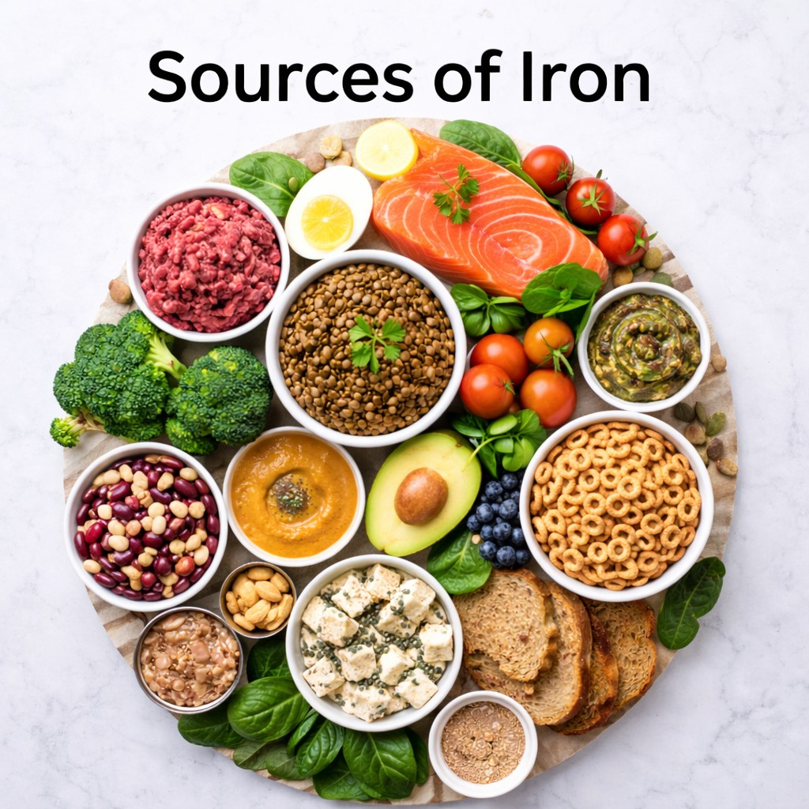
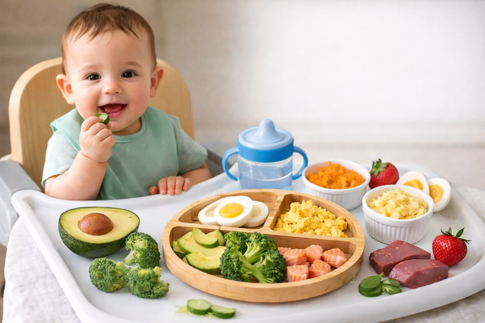

Nutrition
What to feed and when.


Iron-Rich Foods for Babies, Toddlers & Kids
A practical, parent-friendly guide with 50+ meal and snack ideas to meet iron needs.
2026-02-16
Vitamin D for Kids: Why It Matters More Than Most Parents Realize
Vitamin D supports bone growth, immune health, and muscle development. Practical tips for parents.
2026-02-17
25 Best First Foods for Baby: A Parent’s Guide to Starting Solids
A practical guide covering readiness signs, nutrient-dense first foods, feeding tips, and safety reminders to help parents start solids confidently.
2026-02-19